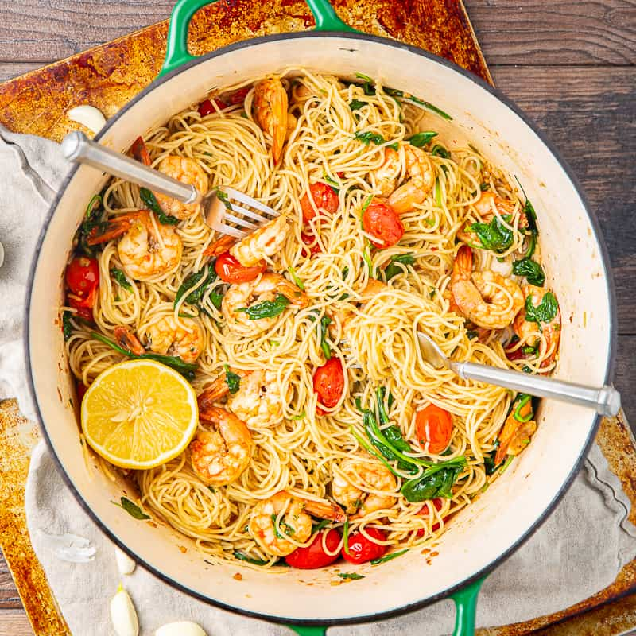

Garlic Butter Shrimp Pasta Recipe

Description
Garlic butter shrimp pasta is a flavorful and easy-to-make dish. It features succulent shrimp cooked in a buttery garlic sauce, which is then tossed with cooked pasta. The addition of fresh lemon juice and parsley adds brightness and freshness to the dish. This combination results in a satisfying and delicious pasta dish with a perfect balance of garlic, butter, and seafood flavors.
Ingredients
- 8 ounces spaghetti or linguine pasta
- 1 pound large shrimp, peeled and deveined/li>
- 4 cloves garlic, minced
- 2 tablespoons fresh lemon juice
- 2 tablespoons chopped parsley
- Salt and pepper to taste
- Grated Parmesan cheese (optional)
Instructions
- Cook the pasta according to the package instructions until al dente. Drain and set aside.
- In a large skillet, melt the butter over medium heat. Add the minced garlic and sauté for about 1 minute until fragrant.
- Add the shrimp to the skillet and cook for 2-3 minutes on each side until pink and cooked through.
- Stir in the lemon juice and chopped parsley. Season with salt and pepper to taste.
- Add the cooked pasta to the skillet and toss until well coated with the garlic butter sauce.
- Serve the garlic butter shrimp pasta hot, garnished with grated Parmesan cheese if desired.